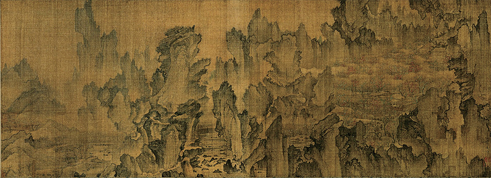

신윤복의 <주유청강>
김홍도의 <마상청앵>
.
.
.
학창시절 미술시간에 들어본 적이 있는 화가들,
미술관에서 한 번쯤은 본 적이 있는 그림들...
신윤복? 김홍도? 김득신? 누구였지...?
풍속화? 민화? 그게 뭐였더라...?
전통화? 그게 뭔데?
들어는 봤나, 전통화?

한국 전통화, 한국화는 종이나 비단 위에
먹이나 물에 녹는 안료(顔料)를 사용하여
부드러운 모필(毛筆)로 그리며,
동양적 자연관과
가치관에 바탕을 둔 회화관(繪畵觀)과 화론(畵論)에
입각하여 그리는 한국 고유의 전통화입니다.
주로 중국의 전통회화와 밀접한 관계를 유지하면서
이를 선별적(選別的)으로 받아들여
한국 특유의 양식을 형성했습니다.
이렇게만 보면 지루하게 느껴지는 전통화지만,
실은 그 속에 재미있는 이야기들이 숨겨져 있다는 것,
알고 계셨나요?
지루하게만 느껴졌던 한국 전통화,
작품 속 숨겨진 이야기와 다양한 해석들로
한국 미술의 즐거움을 느껴봐요!
각 작품의 사진을 클릭해서
작품 속 숨겨진 이야기들을 만나보세요!